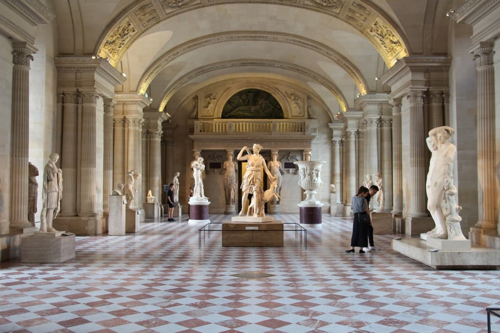
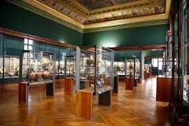
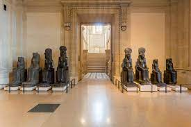

Visitas Guiadas

Lunes, Miercoles, Jueves, Viernes, Sabado y Domingo
El recorrido propuesto por nuestros guías te hará descubrir las obras más insignes del museo (La
Gioconda, la Victoria de Samotracia, la Venus de Milo…), los espacios más emblemáticos del antiguo
palacio del Louvre y su historia.
El pabellon del Reloj (Historia del Louvre)

El Pabellón del Reloj es una de las cuatro torres que se encuentran en la fachada del patio central del
Museo del Louvre en París, Francia. Fue construido en el siglo XVI durante el reinado del rey Francisco
I y era originalmente una torre de vigilancia.
Antiguedades Griegas / La galeria Campana

La colección de la Galería Campana incluye más de 5000 objetos, que van desde pequeñas estatuas y joyas
hasta grandes mosaicos y esculturas monumentales. Muchas de las piezas son de la época clásica de la
Antigua Grecia y de la época romana, y representan la vida cotidiana, la mitología y la religión de
estas culturas antiguas.
Antigüedades itálicas y etruscas

La colección incluye una amplia variedad de objetos, desde obras de arte y joyas hasta objetos
cotidianos como utensilios de cocina y herramientas. Entre las piezas más destacadas se encuentran las
tumbas etruscas reconstruidas, que ofrecen una visión única de la forma en que los antiguos etruscos
honraban y enterraban a sus muertos.
La guardiana del arte egipcio

Dentro de las primeras salas de esta sección, se explican los principales aspectos de la civilización egipcia, empezando por la importancia del Nilo y de su crecida anual, la cual aseguraba la fertilidad del campo. Por su parte, la capilla de la mastaba de Ajethotep nos revela la monumentalidad de la arquitectura egipcia. Luego tenemos una sala dedicada a los jeroglíficos y, a continuación, pasamos a conocer la vida cotidiana de los egipcios, su artesanía, su mobiliario, sus adornos y sus ropajes. Por último, la sala del templo y la colección de sarcófagos recuerdan el lugar preeminente que ocupaban la religión y los ritos funerarios en la civilización egipcia.